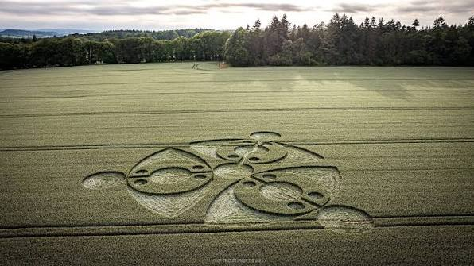
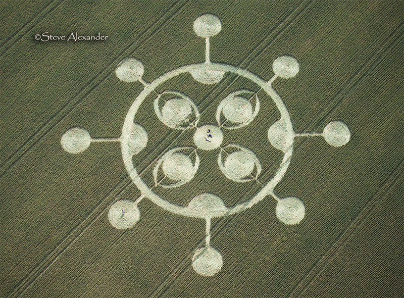
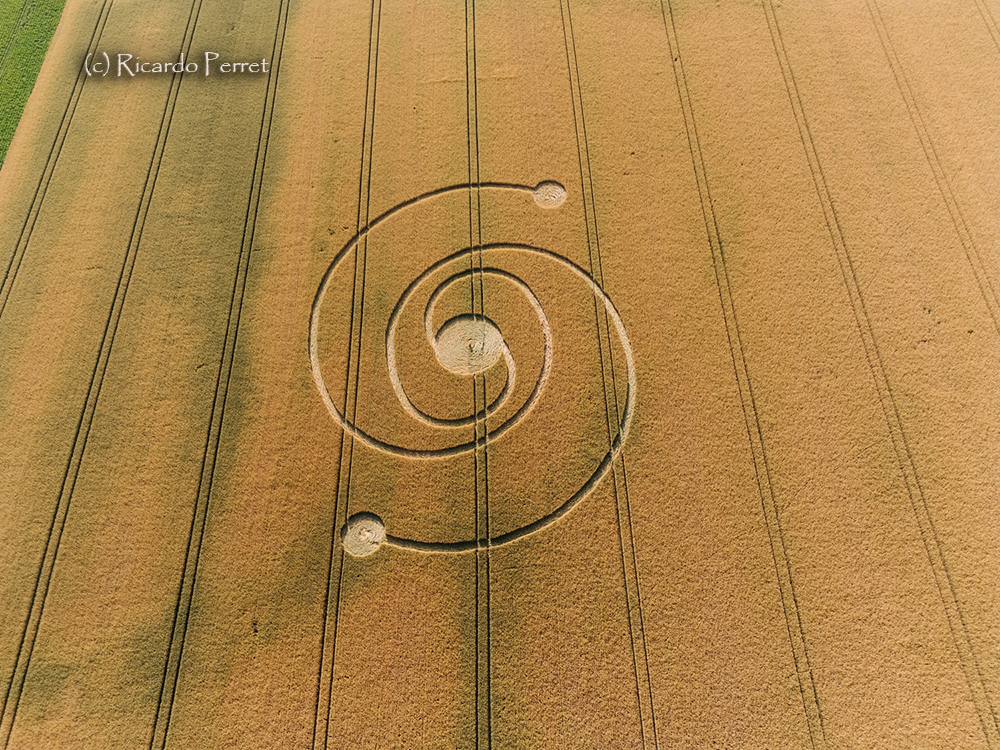
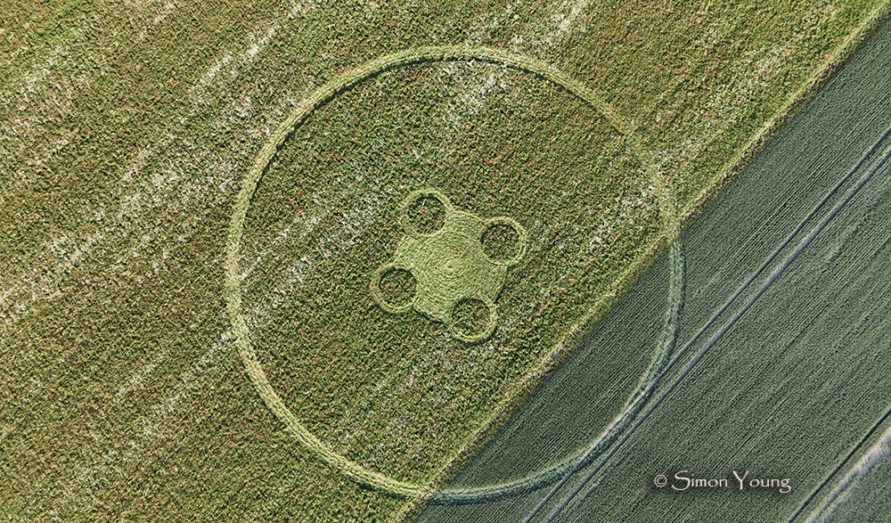

Watch a real documentary. Measure real crop circles. Learn to distinguish between what we know, what we don't know yet, and what we believe. All in English.
| Lesson Basics | |
|---|---|
| Topic | Geometry, Critical Thinking, Documentary Literacy, Evidence vs. Belief |
| Objective | Measure geometric shapes. Describe patterns in English. Understand the difference between "proven," "unknown," and "belief." |
| Level | B-Level (Intermediate / Expanding) — B1 to B2 |
| Duration | 120 minutes · one 2-hour session OR two 60-min classes |
| Skills | Listening · Speaking · Reading · Writing · Vocabulary · Measurement · Critical Thinking |
| Materials | This page · YouTube video (with subtitles) · Printed photographs · Rulers · Sticky notes · Discussion cards |
Before class (or now): Teacher writes on board: "CROP CIRCLES"
Ask students (in pairs, 3 min): "What do you know about crop circles? Have you ever heard of them? What are they?"
Students share. Teacher writes responses on the board. Examples: "They appear in fields." "Aliens made them." "Humans make them." "They are beautiful." "They happen at night."
Teacher asks: "How can we know if something is TRUE?"
"Is something true because we BELIEVE it? Or because we have EVIDENCE for it?"
Pair discussion (5 min). Then: "Today, we will learn to see the difference between BELIEF and EVIDENCE. We will watch a video. We will measure shapes. And we will think like scientists."
Show title card: "What really creates Crop Circles?"
Ask: "Do you think this video will say: (A) Aliens made them, OR (B) Humans made them, OR (C) We're not sure yet?"
Quick vote by show of hands. Keep track on the board. Tell them: "Let's watch and see if you were right."
Introduce 10 KEY VOCABULARY WORDS. Students copy into notebooks or handout:
| Word | Meaning | Example Sentence (B-level) |
|---|---|---|
| Circle | a round shape | A crop circle is a _____ in a field. |
| Diameter | the line across a circle through the center | The _____ of this circle is 100 meters. |
| Ratio | the relationship between two numbers (e.g., 2:1) | The _____ of circle A to circle B is 1:2. |
| Symmetry / Symmetric | when both sides are the same; balanced | This shape has _____ because both sides are the same. |
| Pattern | shapes or things that repeat | Do you see a _____ in this crop circle? |
| Measurement | the size or distance of something | We use a ruler to take a _____ of the circle. |
| Evidence | information that proves something is true | We have _____ that humans can make crop circles. |
| Hoax | a trick or false claim | In 1991, two men confessed to a _____ . They had made crop circles by hand. |
| Precise / Precisely | very exact and accurate | The _____ of this measurement is important. |
| Phenomenon | an unusual event or observation | Crop circles are a _____ that people want to understand. |
SENTENCE FRAMES FOR B-LEVEL SPEAKERS (post on wall or provide as handout):
SEGMENT 1: Watch 00:00–09:00 (The Mystery) — 9 minutes
Students have a simple note-taking sheet:
SEGMENT 2: Watch 23:31–28:00 (The Hoax) — 4.5 minutes
Students watch how humans make crop circles. KEY POINTS TO EMPHASIZE:
Ask 5 simple yes/no questions:
Discuss answer to question 5. (Answer: NO — this proves humans CAN make them, but doesn't prove humans made every single one.)
Show the four crop circle photographs (below). Students will measure them.




MEASUREMENT TASK (in pairs, 12 min):
Give each pair:
While students measure: Teacher circulates. Ask questions: "What do you see?" "How many circles?" "Is the measurement exact or approximate?" "Why is measurement important?"
Complete these sentences with vocabulary from today:
Teacher reviews answers whole-class (5 min). Write correct answers on board.
Divide class into 4 groups. Each group gets one discussion card. Students read the card, discuss, then report to the class.
Fact: We have EVIDENCE that humans can make crop circles. Doug and Dave made them with wooden planks and string.
Question: Does this mean ALL crop circles are made by humans? Why or why not? Use this frame: "I think _____ because we have _____ that _____."
Fact: Some people BELIEVE aliens made crop circles. Other people have EVIDENCE that humans made them.
Question: What is the difference between a belief and evidence? Can both be true? Use this frame: "A belief is _____, but evidence is _____."
Fact: About 90% of crop circles are proven to be human-made. About 10% remain unexplained.
Question: If we know how humans make crop circles, why do some people still believe in aliens? Use this frame: "People believe in _____ because _____."
Fact: The four crop circles from June 2026 all have geometric symmetry (circles arranged in balanced patterns).
Question: Why might someone create a symmetrical pattern? Is symmetry beautiful? Why do humans like symmetry? Use this frame: "I think symmetry is important because _____."
Group Report (3 min per group, 12 min total): Each group reports their answer to the class. Other students listen and ask one follow-up question.
Students choose ONE of these tasks and write 4–6 sentences. (Provide sentence frames below.)
OPTION A — Describe What You Learned:
What did you learn today about crop circles? What is the evidence? What do we not know yet?
OPTION B — Your Opinion:
Do you think humans or aliens (or unknown forces) made the 2026 crop circles? Why?
OPTION C — Measurement:
Explain how to measure a crop circle. What tools do you need? What do you measure? Why is it important?
Ask students (whole group or pairs):
If time permits: Ask 2–3 students to share. Celebrate language use.
"Today, you measured like scientists. You listened to evidence. You thought like mathematicians. That's English AND thinking at the same time."
| # | Activity | Time |
|---|---|---|
| 1 | Warm-Up: Brainstorm + Video Intro | 15 min |
| 2 | Introduction: Vocabulary + Sentence Frames | 15 min |
| 3 | Presentation: Documentary (2 segments) | 25 min |
| 4 | Guided Practice: Measurement + Vocabulary | 25 min |
| 5 | Communicative Practice: Discussion Cards | 20 min |
| 6 | Evaluation: Exit Writing | 15 min |
| 7 | Application: Reflection + Celebration | 5 min |
| TOTAL | 120 min |
| Skill | Developing (1 pt) | Expanding (2 pts) | Bridging (3 pts) |
|---|---|---|---|
| Vocabulary Use | Uses 0–2 words correctly | Uses 4–6 words correctly with minor errors | Uses 7+ words accurately and naturally |
| Measurement | Attempts measurement but with large errors (±20%) | Measures with acceptable accuracy (±10%); identifies 1–2 circles correctly | Measures accurately (±5%); identifies all circles and calculates ratio correctly |
| Speaking | Speaks hesitantly; requires significant prompting | Speaks with pauses; uses simple sentence frames; mostly understood | Speaks with confidence; uses varied sentence frames; clearly understood |
| Writing | Writes 1–2 sentences with significant errors | Writes 3–4 sentences with minor errors; uses frames | Writes 4–6 sentences; uses frames naturally; mostly correct grammar |
| Critical Thinking | Cannot distinguish evidence from belief | Shows some understanding of difference; gives simple reasoning | Clearly distinguishes evidence from belief; gives logical reasoning |
Hour House Adult ESL
229 Ballantine Parkway
Newark, NJ 07104
Teacher: Pablo Nogueira Grossi
g6llc.gumroad.com
YouTube: SLICE Science Documentary
GitHub: AXLE Lessons
CAELA Framework for Adult ESL
totogt.github.io (all lessons)